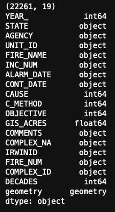
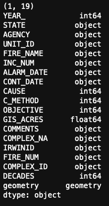
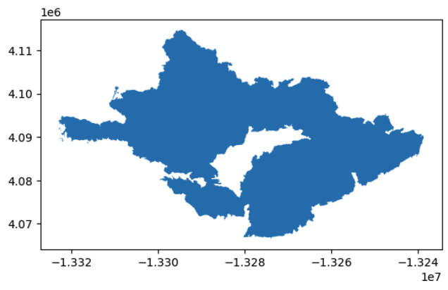
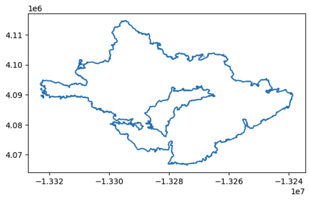
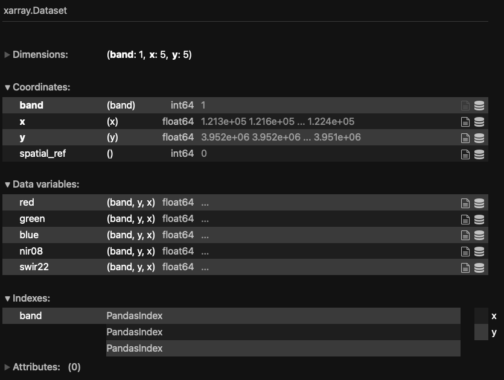
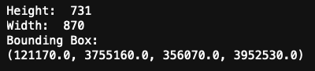
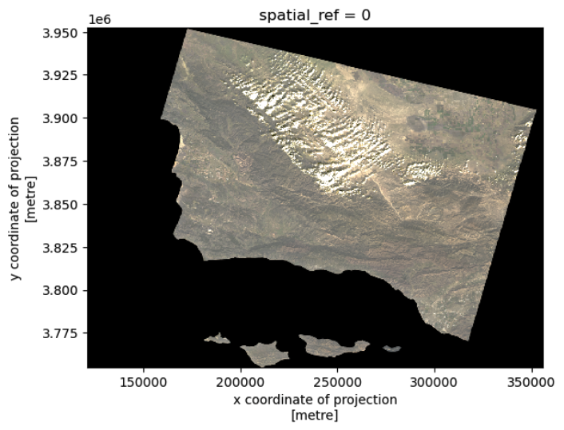
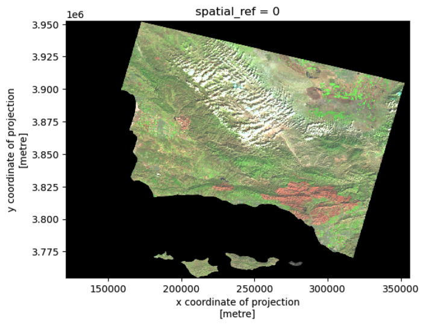

False Color Imagery is a visual representation technique to depict data in wavelengths outside the visible spectrum, by assigning visible colors to non-visible wavelengths. This is a common practice in remote sensing to show land features that are not easily discernible to the human eye. Some remote sensing satellites carry equipment to collect data in wavelengths outside the visible spectrum, like Near-Infrared (NIR) and Shortwave Infrared (SWIR). These wavelengths can then be reassigned and visualized to create false color images of the land surface, accentuating features that would otherwise have gone unnoticed.
While this sounds tricky, it can be quite simple to code and visualize in programming languages, in this case Python. In this post, we will be using false color imagery to visualize the scar left behind by the Southern California Thomas Fire in December 2017, using data collected from the Landsat satellite.
The Thomas Fire was the largest wildfire in modern California history, covering an area of ~282,000 acres (1,141 sq km)1. The fire started on December 4, 2017, and destroyed more than a thousand structures before it was extinguished on January 12, 20182. After burning much of the South Santa Barbara County area, heavy rainfall3 in January 2018 presented significant risk of mudslides, ultimately resulting in the mudflow in Montecito, California, on January 9, 20184 5.
The purpose of this post is to act as an example of how to work with shapefiles in conjunction with raster data in Python. We will do simple exploration of the xarray.Dataset called landsat, an raster image of the Santa Barbara County area that contains data for visible, infrared, and near infrared color bands (wavelengths). We will then reassign these color bands to visible colors to generate a false color image, and overlay the boundary of the Thomas Fire.
Datasets
Landsat Data: The data from Landsat is raster data retrieved from Microsoft’s Planetary Computer. Access it here: https://planetarycomputer.microsoft.com/dataset/landsat-c2-l2
Fire Perimeters Dataset: This dataset is a shapefile file retrieved from Data.gov of every wildfire in California since 1878. Access it here: https://catalog.data.gov/dataset/california-fire-perimeters-all-b3436
_
Let’s get started!
Importing necessary packages:
import os
import numpy as np
import pandas as pd
import geopandas as gpd
import xarray as xr
import rioxarray as rioxr
import matplotlib.pyplot as pltFire Data Loading and Exploration
The fire perimeter data set is huge. In this code, we have narrowed down the data set to just the 2017 Thomas Fire, and created a new shapefile for its perimeter. This way we can save some time when running the code, as we won’t have to load the entire dataset, only the data we need.
fires = gpd.read_file("fire_perimeters/California_Fire_Perimeters_(all).shp")Now, we can do some simple exploration of the data. This is always an important step to get an idea of the data set as a whole.
print(fires.shape)
print(fires.dtypes)
thomas_fire = fires[(fires['FIRE_NAME'] == 'THOMAS') & (fires['YEAR_'] == 2017)]
thomas_fire.to_file("data/thomas_fire.shp")print(thomas_fire.shape)
print(thomas_fire.dtypes)
Now we can make our first basic visualization of the Thomas Fire perimeter.
thomas_fire.plot()
Notice the polygon is filled in; since we only want the perimeter, we can simply use .boundary while plotting.
thomas_fire.boundary.plot()
Landsat Data Loading and Exploration
To properly open the Landsat data, we can use a function out of the package we loaded earlier, rioxarray. This package is loaded as rioxr, and integrates the packages rasterio (used for loading raster data), and xarray, which handles multidimensional arrays like time series, or in this case, multi-band imagery. We will also take a look at the head of the xarray.Dataset to see what it looks like.
fp = os.path.join("/example/path/to/your/data", "landsat8-2018-01-26-sb-simplified.nc")
landsat = rioxr.open_rasterio(fp)
landsat.head()
It’s not the most easily digestible data set! So we will do some basic exploration of the data, such as looking at its width, height, and bounding box.
print('Height: ', landsat.rio.height)
print('Width: ', landsat.rio.width)
print('Bounding Box: ')
print(landsat.rio.bounds(), '\n')
This data is multidimensional, and cannot be plotted at this point. We can drop the band dimension, which makes the data single dimensional for plotting.
landsat = landsat.squeeze().drop_vars("band")False Color Image
Now we can try our first visualization of the Landsat data. This is where we can arrange color bands for our visualization, but for now we will arrange them in their proper places to produce a true color image. It is important to add the argument robust = True, as this excludes outlying colors that create noise and distort our true color image.
landsat[['red', 'green', 'blue']].to_array().plot.imshow(robust = True)
We can arrange color bands however we like! For this false color image, we are replacing the red band with shortwave infrared (SWIR), the green band with near infrared (NIR), and the blue band with red.
landsat[['swir22', 'nir08', 'red']].to_array().plot.imshow(robust = True)
False Color Map
Before we make a map out of the false color image, we need to make sure that the Thomas Fire perimeter shapefile is compatible with it. We can adjust the CRS of the shapefile to match that of the Landsat data.
thomas_fire = thomas_fire.to_crs(landsat.rio.crs)We will also establish an aspect ratio for out map, based on the Landsat data.
landsat_aspect_ratio = landsat.rio.width / landsat.rio.heightAnd now we can create our map!
fig, ax = plt.subplots(figsize= (10, 6*landsat_aspect_ratio))
ax.axis('off')
landsat[['swir22', 'nir08', 'red']].to_array().plot.imshow(robust = True, ax=ax)
thomas_fire.boundary.plot(ax = ax, color = "maroon", label = "Thomas Fire Boundary")
ax.set_title("Thomas Fire Scar\nDecember 2017", fontsize=16, weight='bold', pad=20)
fig.suptitle(" Landsat Composite with Fire Boundary", fontsize=12, weight='bold', y=0.91, color = "maroon")
fig.text(
0.5, 0.06,
"Landsat Imagery: https://planetarycomputer.microsoft.com/dataset/landsat-c2-l2\nThomas Fire Boundary: https://catalog.data.gov/dataset/california-fire-perimeters-all-b3436", # Text
ha="center", va="bottom", fontsize=10, color="gray"
)
ax.legend(
loc="center left", # Position the legend on the right
bbox_to_anchor=(1, 0.5), # Adjust the position to the right of the plot
fontsize=10,
frameon=False # Optional: Remove the frame around the legend
)
plt.show()
We have now generated a false color map of the Santa Barbara County area, using near and shortwave infrared to emphasize the fire scar left by the Thomas Fire. The boundary of the Thomas Fire has been overlayed to display the exact area affected by the fire. By replacing the red, green, and blue bands with shortwave infrared, near infrared, and red bands (respectively), we can highlight burned areas, vegetation, and bodies of water. Burned areas appear in dark red and brown, as they strongly reflect shortwave infrared but absorb visible light. Living vegetation appears in bright green colors as it strongly reflects near infrared light. This method provides a clearer view of the Thomas Fire’s impact on the landsacape.
Footnotes
https://lpdaac.usgs.gov/resources/data-action/observing-thomas-fire-using-nasa-earth-data/↩︎
https://www.fire.ca.gov/incidents/2017/12/4/thomas-fire/↩︎
https://www.dailynews.com/2018/01/10/rain-is-done-how-much-did-we-get/↩︎
https://www.latimes.com/local/lanow/la-me-ln-mudslide-recovery-mainbar-20180111-story.html↩︎
Banner image sourced from: https://earthobservatory.nasa.gov/images/91379/smoke-and-fire-in-southern-california↩︎